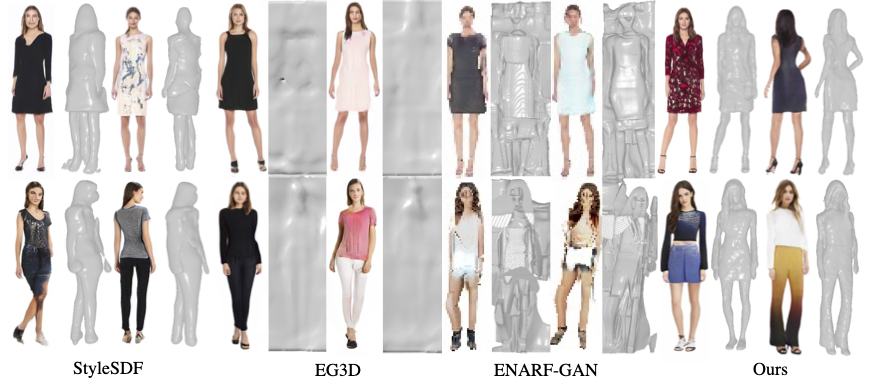
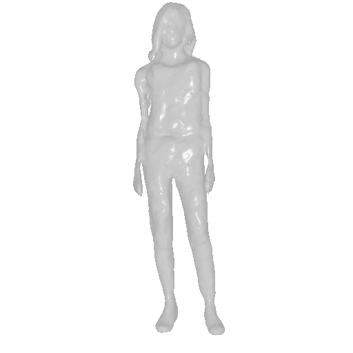
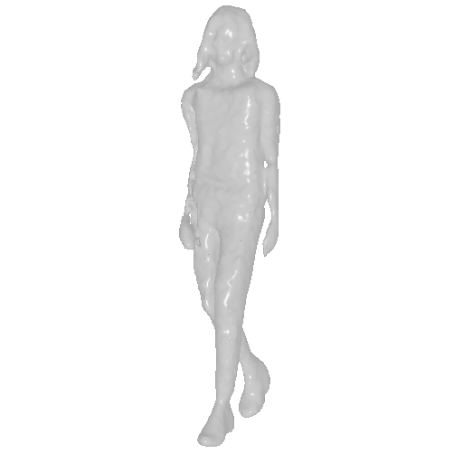
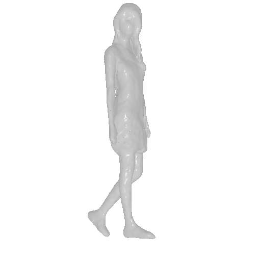
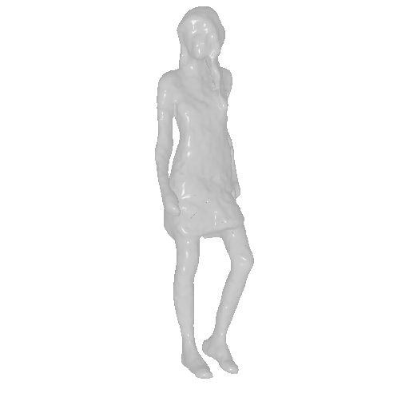

Unsupervised generation of 3D-aware clothed humans with various appearances and controllable geometries is important for creating virtual human avatars and other AR/VR applications. Existing methods are either limited to rigid object modeling, or not generative and thus unable to generate high-quality virtual humans and animate them. In this work, we proposeAvatarGen, the first method that enables not only geometry-aware clothed human synthesis with high-fidelity appearances but also disentangled human animation controllability, while only requiring 2D images for training. Specifically, we decompose the generative 3D human synthesis into pose-guided mapping and canonical representation with predefined human pose and shape, such that the canonical representation can be explicitly driven to different poses and shapes with the guidance of a 3D parametric human model SMPL. AvatarGen further introduces a deformation network to learn non-rigid deformations for modeling fine-grained geometric details and pose-dependent dynamics. To improve the geometry quality of the generated human avatars, it leverages the signed distance field as geometric proxy, which allows more direct regularization from the 3D geometric priors of SMPL. Benefiting from these designs, our method can generate animatable 3D human avatars with high-quality appearance and geometry modeling, significantly outperforming previous 3D GANs. Furthermore, it is competent for many applications, e.g., single-view reconstruction, re-animation, and text-guided synthesis/editing.

Qualitative comparisons of generation results against baselines.
| Input and inversion | Geometry | Novel pose | Geometry |
 |
 |
||
 |
 |
Given target image, we optimize the latent code to inverse the input images. Then we can synthesize novel view rendering with multi-view consistency and control the generation with novel poses.
| Text prompts | |||
| Light blue jeans | |||
| Long dress |
We visualize text-guided clothed human synthesis. Following StyleCLIP, we optimize the latent code of the synthesized images with a sequence of text prompts that specify different cloth styles.
@article{zhang2022avatargen,
author = {Zhang, Jianfeng and Jiang, Zihang and Yang, Dingdong and Xu, Hongyi and Shi, Yichun and Song, Guoxian and Xu, Zhongcong and Wang, Xinchao and Feng, Jiashi},
title = {AvatarGen: A 3D Generative Model for Animatable Human Avatars},
journal = {Arxiv},
year = {2022},
}